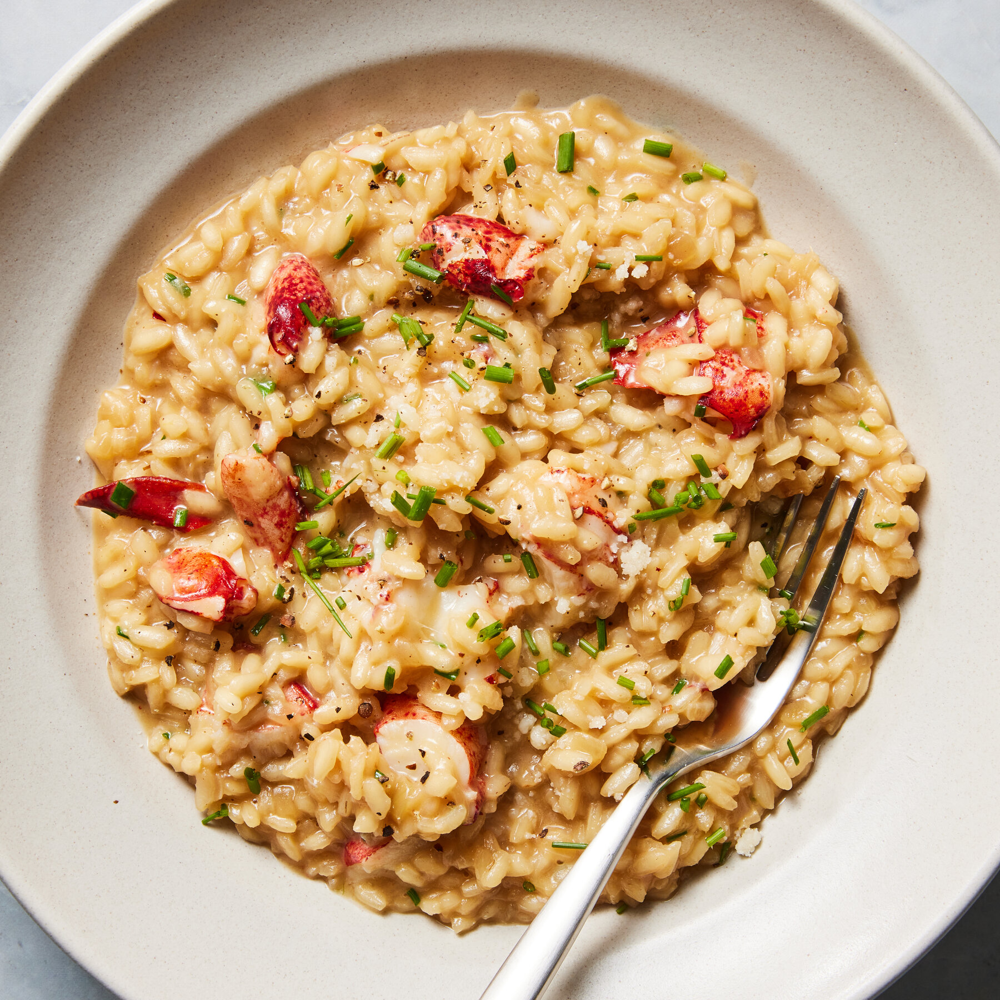

Mushroom Risotto

Prep Time:
35 mins |
Difficulty:
Medium
Ingredients
Arborio rice, Mushrooms, Veg broth, Parmesan, Butter
Steps
Sauté mushrooms.
Add broth slowly while stirring.
Finish with cheese.